Chapter 3 Continuous Random Variables
In the last chapter, we learned about discrete random variables, expectations, variance, and some common discrete distributions. In this chapter we will explore similar concepts for random variables with continuous spaces. We also get to learn (yes, I’m excited) about one of the most useful, prolific, and benignly named distributions: The normal distribution.
3.1 Probability Density and the Continuous Random Variable
As you may have guessed, and as I have alluded to, the way we define a continuous random variable is somewhat different from our approach to discrete variables. Continuous random variables are distinguished first and foremost by their space - wherein an outcome may take on any value in a continuous range of values. We may, for example, define the set of outcomes for a continuous random variable to be all the values between and including 0 and 1, e.g., \(0 \leq X \leq 1\), or all the values on the real number line, e.g., \(-\infty < x < \infty\). Continuous random variables are prolific within the behavioral sciences: Age, height, and reaction time, for example, can all be thought of as continuous random variables.
To fully specify a continuous random variable, we shall again need a set of rules describing its randomness, a.k.a., a probability distribution. This is where things get tricky. As you will see the difficulty arises from our aforementioned definition of continuous spaces. Let’s explore this by considering a random variable with the space - \(0 \leq X \leq 1\). Suppose we would like to define a probability distribution for this random variable. One (un)reasonable thing to try would be to proceed as we would for a discrete random variable. We could take a probability mass of 1 and spread it around over of the values in the range. That is to say, we could try to define a probability mass function for our continuous random variable.
Take a moment to glance back at the properties of a probability mass function (if you don’t remember them). Specifically, over the \(n\) outcomes in the space of a discrete random variable \(X\), a pmf must have
\[ \sum_{i = 1}^{n} p(x_i) = 1 \]
This property will be quite difficult to attain in the continuous case - because, as we will see, the values in a continuous range aren’t countable. That is, we can’t list them out in an orderly fashion (e.g., like we could for the Bernoulli, binomial, and poisson distributions). Turning our attention back to our random variable with space \(0 \leq X \leq 1\), let’s try to count all the values between 0 and 1. Suppose we’ve listed (or believe we have listed) all the values in the range, e.g.,
\[ 0.123451..., \:0.234672...,\:0.247773...,\:0.866724...,\:0.999525... \]
We line our list up with the natural numbers and begin counting.
\[ 1) \:\: 0.123451...\\ 2) \:\: 0.234672...\\ 3) \:\: 0.247773...\\ 4) \:\: 0.866724...\\ 5) \:\: 0.999525... \]
But to our surprise (or maybe to our non-surprise) there will always be a number we missed during our enumeration. Note the underlined digits in our list below.
\[ 1) \:\: 0.\underline{1}23451...\\ 2) \:\: 0.2\underline{3}4672...\\ 3) \:\: 0.24\underline{7}773...\\ 4) \:\: 0.866\underline{7}24...\\ 5) \:\: 0.9995\underline{2}5... \]
We can specify a new number \(0.abcde\) such that a, b, c, d, and e are numbers between 0 and 9, representing the first through fifth digits, respectively. To make sure our number is new, we ensure that \(a \neq 1\), \(b \neq 3\), \(c \neq 7\), \(d \neq 7\), and \(e \neq 2\). Thus the first digit will differ from that of the first listed number, the second digit will differ from that of the second listed number, and so on. Our number is therefore different from each of the numbers in our list. This method of finding a new number would always work. No matter how certain we were in the thoroughness of our list, we would always have to go back and account for a newly discovered number.
The logic described above, credited to Georg Cantor a famous set theorist, is indeed intriguing (in fact it’s one of my favorite proofs of all time!), but why is it important for our purposes? It tells us that we can’t specify probability distributions for continuous random variables in the way that we define them for discrete random variables. You can’t sum the probability of each outcome - \(p(x_1)\) - over the set of outcomes because we can’t list the outcomes out. And, therefore, we can’t ensure we’ve attained the important property of \(\sum_{i = 1}^{n} p(x_i) = 1\).
As it turns out, we get around this conundrum by assigning probabilities to ranges of our continuous random variable, and we frequently do this with something called a probability density function (pdf). A probability density function describes the amount of probability (sometimes referred to here as probability mass) per unit \(x\) at a given point. As you will see, the probability density will help us determine the probability of an outcome falling within a given range. For example, it could tell us the probability that \(X\) falls below the value of \(.5\), e.g., \(P(X < .5)\). We’ll dig deeper into this concept as we have in the past - through an example.
Example 3.1 Suppose we have a probability density function
\[ f(x) = \begin{cases} 1 & 0 \leq x \leq 1 \\ 0 & Everywhere \: else \end{cases} \]
This function assigns a value of 1 probability density to any value - \(0 \leq x \leq 1\). Anywhere else it assigns a value of 0. Let’s refer to units of probability mass (or probability) with the abbreviation - \(pm\) - and let’s assume that the units of \(x\) are \(u\) (short for units of x). Suppose our value of \(x = .25\), then
\[ f(.25) = 1 \]
The value of 1 from our pdf is a probability density which has the units \(pm/u\), e.g., probability mass per units of x. That is to say, our probability density function is describing the amount of probability mass per unit \(x\) at exactly the point \(x = .25\). Now let’s talk about how such a function assigns probability to a range of x. Take a look at the plot of our probability density function below.
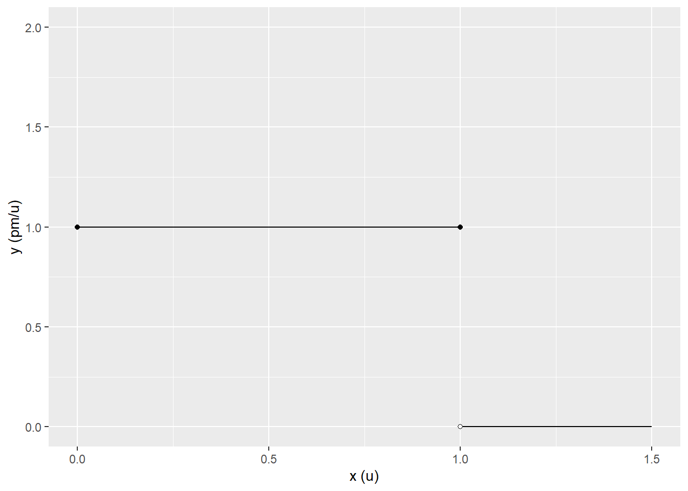
Figure 3.1: Boring
Indeed, it is a very boring plot - just a horizontal line where \(f(x) = 1\) from 0 to 1. We’re going to calculate an area under that line, and that area will be a probability mass! For demonstration sake, let’s stick with \(x = .25\) and calculate the area under the \(f(x)\) line from \(0 \leq x \leq .25\). Take a look at the the rectangle with the diagonal lines through it in the plot below. The area to which we are referring is bordered by \(f(x)\) at the top, the x-axis at the bottom, and vertical lines at \(x = 0\) and \(x = .25\), respectively.
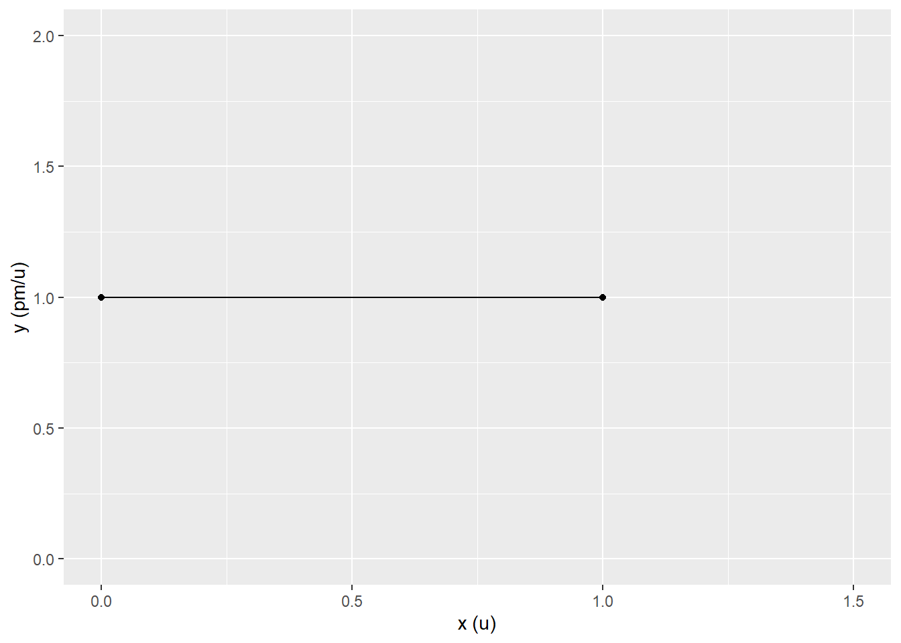
Figure 3.2: Area under the density
Recall that the equation for calculating the area of a rectangle is the length of the base (call it \(B\)) times the height (call it \(H\)) - \(BH = area\). Here the length of the base is \(.25\), and the height of our rectangle is \(f(.25)=1\). Also note the units: The length has units - \(u\) (units of x) - and the height has units of probability density - \(pm/u\) - probability mass per unit \(x\). Therefore
\[ area \: = \: BH \: = \frac{.25\:u}{1} \times \frac{1\:pm}{1\:u} = .25 pm \]
We get an area of .25, but the story of the calculation is in the units of this value. Note how the units of \(x\) cancel out, and the units of our calculated value are \(pm\) (probability mass). That is to say, our probability density function has assigned a 25% probability to the range \(0 \leq x \leq .25\). Put another way, we have \(P(0\leq X\leq.25) = .25\). Indeed, if we calculate the area under the whole curve (line) where \(f(x) = 1\), then we would find that the area is 1. That is, there is a 100% chance that our random variable \(X\) falls in the range \(0 \leq x \leq .25\). This mimics the property of pmfs we discussed at the start of this section.
There we have it, then. The probability density function assigns a probability to a range via the area under its curve. In practice, calculation of this area requires more advanced mathematics than we have demonstrated above. For example, consider the function
\[ f(x) = \begin{cases} e^{-x} & 0 \leq x \leq \infty \\ 0 & x<0 \end{cases} \] This function is an example of an exponential distribution. When we look at its plot (below) it becomes apparent that calculating the area under it’s curve is a bit more complicated.
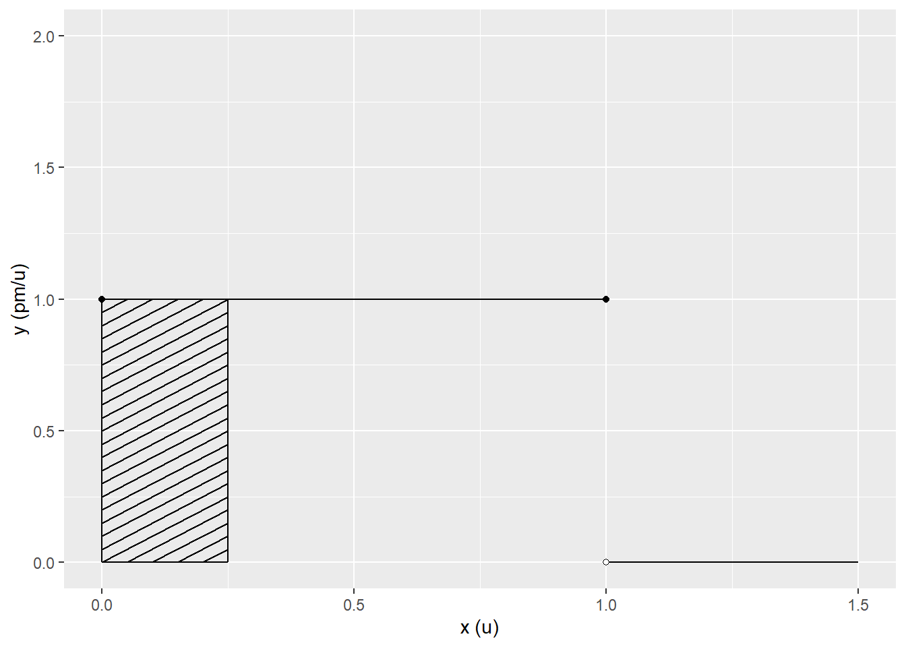
We can’t just calculate this area as we did with our rectangular region. More advanced techniques (that you would learn in Calculus 2) do show that the area under the curve of this function is equal to 1. That is, \(P(0 < X < \infty) = 1\). The means by which we calculate the area under a given probability density function (and a function more generally) is called integration. The concept of integration is well beyond the scope of this book, so we shall only discuss it briefly and at high level. If you are excited enough to about the concept of integration, you are certainly capable of learning it in more detail.
Given some function, \(f(x)\), integration is indicated by
\[ area \:=\int_{a}^{b} f(x) \,dx \]
The values a and b indicate the starting point and the ending point for the integration. They tell us to calculate the area under the curve \(f(x)\) from a to b. In our first example above, we calculated the integral of \(f(x)\) from x = 0 to x = .25. In terms of our probability set operator, and given some pdf, we observe that
\[ P(a < X < b) = \int_{a}^{b} f(x) \, dx \] That is to say, in the context of a pdf (and a continuous random variable), the probability that the outcome of some random experiment falls in a given range from a to b is the integral (area) of the pdf from a to b. Indeed for our purposes, it is important for you to know this at a high level. You shall not - except where your skills will allow - be asked to do an integral in this book. However, it’s helpful to know what an integral is and what a probability density is. It will make our foray into continuous distributions much more interesting.
Next we turn our attention to the properties of a pdf, which are analogous to the discrete case. Specifically
\(f(x) \geq 0\). The values for which \(f(x) > 0\) are referred to as the support of the continuous random variable. This is analogous to the discrete case and pmf. However, note the subtle difference: \(f(x)\) can be greater than 1.
\(\int_{-\infty}^{\infty} f(x) \, dx = 1\). Put in words, the area under the pdf is equal to 1. Here, we use negative infinity and positive infinity for the integral to make things easier notation wise. Any value outside the space of the random variable \(X\) is assigned a probability density of zero. That is to say, the ranges of “infinity” outside the space of \(X\) have probability zero, and therefore, writing negative and positive infinity doesn’t change the outcome of the integral/area calculation.
Now, let’s return to our simple pdf from the beginning of this section
\[ f(x) = \begin{cases} 1 & 0 \leq x \leq 1 \\ 0 & Everywhere \: else \end{cases} \]
Note that this function has all the properties of a pdf - \(f(x) \geq 1\) and \(\int_{-\infty}^{\infty} f(x) \, dx = 1\). The area under \(f(x)\) from 0 to 1 is equal to 1, and everywhere else the area is equal to zero. That is to say, over the entire space of \(X\) the area under the curve is equal to 1. This particular function is an example of a continuous uniform distribution. The functions assign a constant probability density over the support of \(X\) and are analogous to the discrete uniform distribution. Here’s another example that assigns \(\frac{1}{2}\) density from 0 to 2.
\[ f(x) = \begin{cases} 1/2 & 0 \leq x \leq 2 \\ 0 & Everywhere \: else \end{cases} \]
3.1.1 Practice Problems
For the next few problems describe if the function is not a pdf and explain why. It will be helpful to draw a plot of each function and recall (or look-up) calculations for geometric shapes.
\(f(x) = x\) from \(-1 < x < 1\) and zero everywhere else.
\(f(x) = 2\) from \(0 < x < 1/2\) and zero everywhere else.
\(f(x) = x\) from \(0 < x < \sqrt{2}\) and zero everywhere else (Hint: draw the plot).
Given the pdf below. For problems 4-7 calculate the probability that an outcome of a random experiment falls in the specified range. \[ f(x) = \begin{cases} 1/2 & 0 \leq x \leq 2 \\ 0 & Everywhere \: else \end{cases} \]
What is \(P(0 < X < .25)\)?
What is \(P(1 < X < 2)\)?
What is \(P(.25 < X < 1)\)?
What is \(P(X > 2)\)
This problem may be tough. Don’t get discouraged. Given the pdf
\[ f(x) = \begin{cases} x & 0 \leq x \leq \sqrt{2} \\ 0 & Everywhere \: else \end{cases} \]
Describe a function - \(F(x)\) - that takes a value of \(x\) and returns \(P(0 < X < x)\). Think about the area of a triangle.
3.1.2 Practice Problem Answers
- \(f(-1) = -1\), so this function can’t be a pdf because \(-1 < 0\).
- This function would work as a probability density.
- This function would work as a probability density.
- 1/8
- 1/2
- 3/8
- 0
- \(\frac{1}{2}xf(x) = \frac{1}{2}xx = \frac{1}{2}x^2\). If you got that part, well done! If you didn’t, no worries it was tricky. Now there’s a subtle point that must be made which I would not have fully expected you to notice (because of my explanations; not because of any shortcomings you may have). The density is zero after \(\sqrt(2)\) and before zero. After \(\sqrt(2)\) there is zero area under the density curve and therefore zero additional probability added. In other words,
\[ F(x) = \begin{cases} 0 & x < 0 \\ \frac{1}{2}x^2 & 0 \leq x \leq \sqrt{2} \\ 1 & \sqrt{2} < x \end{cases} \]
3.2 Cumulative Distribution Functions, Independence, and Expectations
3.2.1 Cumulative Distribution Functions
As practitioners, we usually won’t work directly with the probability density of a continuous random variable. Instead, we will work with something called a cumulative distribution function (cdf). Given a random variable with a probability density function, \(f(x)\), a cdf determines the area under the density curve left of (less than) a given value of \(x\). That is to say, it tells us \(P(X < x)\). We often refer to these functions with a capital \(F\) to distinguish them from their corresponding pdf \(f\). In other words,
\[ F(x) = P(X < x) \tag{3.1} \] Note that you may also see \(F(x) = P(X \leq x)\) in other literature. This is an equivalent way of writing the equation above.
Example 3.2 Let’s return to our first ever probability density (it was so long ago!).
\[ f(x) = \begin{cases} 1 & 0 \leq x \leq 1 \\ 0 & Everywhere \: else \end{cases} \]
We would like to calculate a cdf for our random variable \(X\), and for that purpose, it helps to look at a graph and calculate a few values. Take a look at the very boring graph of our pdf again.
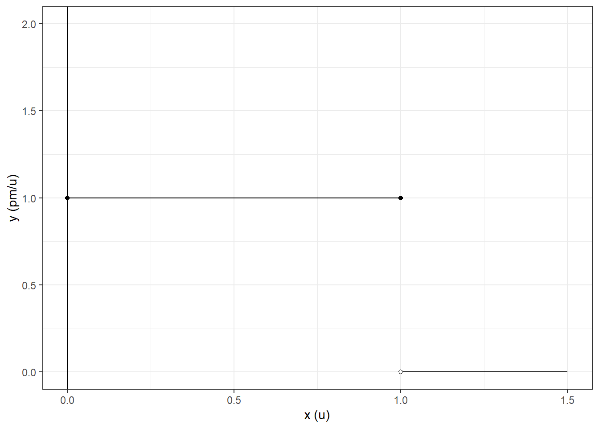
Figure 3.3: Very Boring
Suppose we want to calculate \(P(X < x)\) for several specified values of \(x\), say, .25, .5, .75, and 1. Call each of these values \(x_1\), \(x_2\), \(x_3\) and \(x_4\), respectively. To calculate \(P(X < X_i)\), we will need to determine the area under the pdf from \(-\infty\) up to the given value of \(x_i\). In the figure below, I’ve drawn a vertical line corresponding to each \(x_i\). We will endeavor to calculate the area under \(f(x)\) up to each one of those lines, and this will give us a idea of the CDF of \(x\).
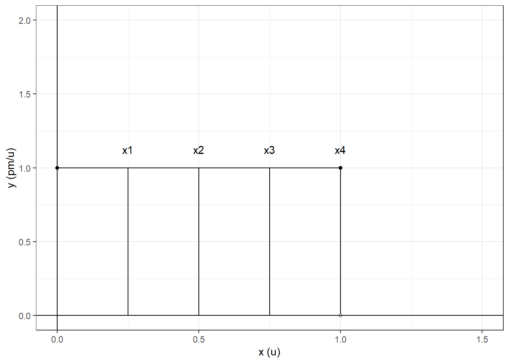
Figure 3.4: Very Very Boring
Thankfully, in this case, we won’t need any fancy integration techniques to calculate a couple of values. Each area of interest is a rectangle. This means that we simply need to multiply the length of the base of each of the rectangles (in this case \(x_i\)) in the figure above by its height (in this case, \(1\)). That is to say, we can proceed as in example 3.1. But before we do that, note that we are calculating the area under the pdf for all values less than \(x\). For example, in the case of \(x_1 = .25\), we will need to calculate the area under the curve from \(-\infty\) all the way up to the value of \(x_i\) which is, unfortunately, not a rectangle (oh, the horror!). Thankfully, our pdf says that any value less than 0 has a probability density of 0, e.g., \(f(x) = 0\), so we can safely assume that the area under the curve for any value less than zero is zero.
We shall therefore proceed as we did in example 3.1. The calculations are written out in the table below.
Base: x | Height: f(x) | P(X < x): Base x Height |
|---|---|---|
0.25 | 1 | 0.25 |
0.50 | 1 | 0.50 |
0.75 | 1 | 0.75 |
1.00 | 1 | 1.00 |
Now, let’s plot each of our values of \(x\) and it’s corresponding \(P(X < x)\). Ultimately this will help us get a sense for the cdf of \(f(x)\). In this case, we have four \((x,y)\) coordinates - \((.25, P(X < .25))\), \((.50, P(X < .50))\),\((.75, P(x < .75))\), and \((1, P(X < 1))\). If we plot each and connect each with a line, we get
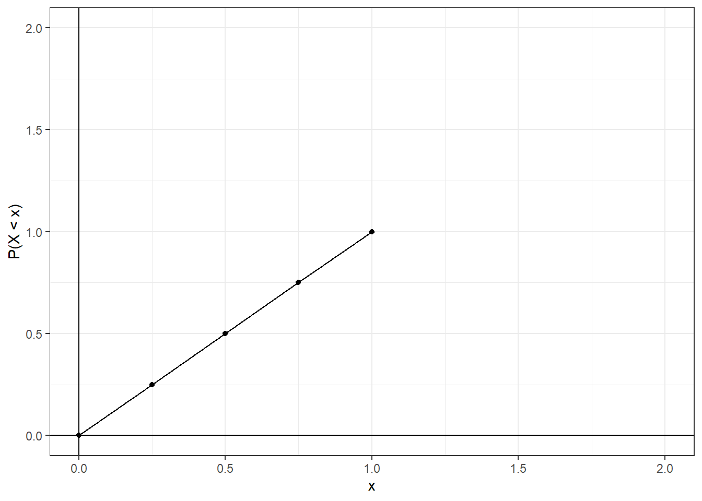
Figure 3.5: The (almost) cdf of f(x)
Looking at the plot above, and considering our earlier computations, we might begin to think that \(P(x < X) = x\). That is to say, the probability that \(P(X < x_i)\) is \(x_i\). This assertion would be correct. The cdf of \(f(x)\) is
\[ P(X < x) = F(x) = \begin{cases} 0 & x < 0 \\ x & 0 \leq x \leq 1 \\ 1 & x > 1 \end{cases} \]
For any value below 0, \(f(x)\) has zero density, so \(P(X < 0) = 0\). On the other hand, if our value of \(x\) is greater than 1, then \(P(X < x) = 1\). There is no additional area under the curve for values above 1, so \(P(X < x)\) does not get any larger after that. For all other values, \(P(X < x) = x\)
Our new-found cdf makes computations easier. For example, given the values 0.11, 0.512, and 0.98, then
\[ P(X < 0.11) = F(.11) = 0.11 \\ P(X < 0.512) = F(0.512) = 0.512 \\ P(X < 0.98) = F(0.98) = 0.98 \]
In practice, we will sometimes want to know the probability of \(X\) falling in a range dissimilar from the cdf. We may want to know, for example, \(P(a < X < b)\) or \(P(X > a)\). In our next examples, we frame the intuition of a some common scenarios. If you’ve forgotten, now may be the time to review your set notation for continuous sample spaces.
The examples we work through shall use a continuous random variable - \(X\) - with an exponential pdf (a.k.a., an exponential distribution), e.g.,
\[ f(x) = \begin{cases} e^{-x} & x \geq 0 \\ 0 & x < 0 \end{cases} \]
The exponential pdf has the cdf
\[ P(X < x) = F(x) = \begin{cases} 1-e^{-x} & x \geq 0 \\ 0 & x < 0 \end{cases} \]
You can see the pdf and the cdf plotted side by side (respectively) in the figure below. Note how the area under the curve for the pdf declines as \(x\) gets larger. For example, there’s more area under the pdf from 0 to 2.5 than there is from 2.5 to 5. Intuitively speaking, this explains the shape of the cumulative distribution function on the right. If we are calculating \(P(X < x)\), incremental increases in \(x\) near zero are going to result in relatively large increases in the area under the curve to the left of \(x\). Thus the cdf - which represents \(P(X < x)\) - increases rapidly for values of \(x\) that are closer to zero. Then as \(x\) gets larger, incremental increases don’t add much area, so \(P(X < x)\) grows much slower until it levels out. At very large values of \(x\) it will be very close to 1.
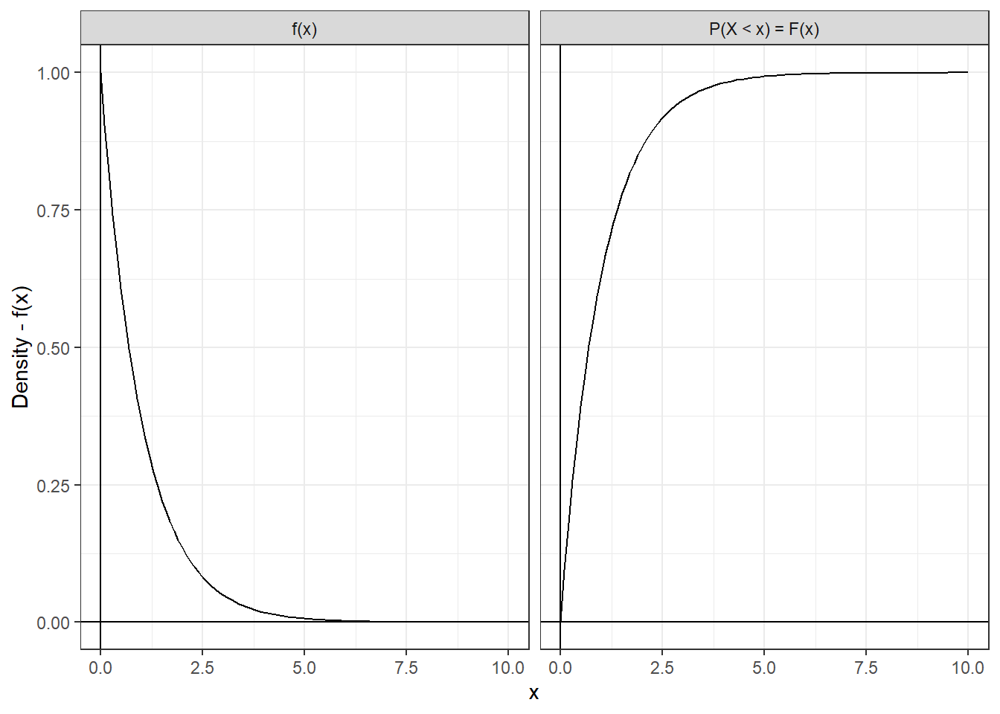
Figure 3.6: The pdf and cdf for our example
Example 3.3 Suppose we are working with our previously described exponentially distributed random variable, and we would like to know the probability that the outcome of a random experiment falls between 2 and 3. That is, we would like to know \(P(2 < X < 3)\). Using our cdf, we could easily calculate \(P(X < 3)\) but that would include all the probability mass in the region below 2. That’s not what we want, but we can still work with our cdf to get what we need. In the solution that follows, we shall approach the problem in two ways - one using set notation and another that leans on intuition and graphs.
First, take a close look at the event \(X < 3\). It can actually be written as the union of two mutually exclusive events, e.g.,
\[ \{X < 3\} = \{X < 2\} \cup \{2 \leq X < 3\} \]
This means that we can use the law of addition (1.8) to get what we need! To see how, notice that
\[ P(\{X < 2\} \cup \{2 \leq X < 3\}) = P(X < 3) \\ P(X < 2) + P(2 \leq X < 3) = P(X < 3) \] Where the second line follows from the law of addition. Further note I dropped the curly braces in the second line for the sake of simplicity. We can now subtract \(P(X < 2)\) from both sides and voila
\[ \begin{align} P(2 \leq X < 3) &= P(X < 3) - P(X < 2) \\ P(2 \leq X < 3) &= F(3) - F(2) \\ P(2 \leq X < 3) &= 1-e^{-3} - (1 - e^{-2}) \\ P(2 \leq X < 3) &= 1-e^{-3} - 1 + e^{-2} \\ P(2 \leq X < 3) &= e^{-2}-e^{-3} = 0.08555 \end{align} \]
Indeed, in general, given some \(a\) and \(b\), \(P(a < X < b)\) can be calculated by
\[ P(a < X < b) = P(X < b) - P(X < a) = F(b) - F(a) \tag{3.2} \] Note that a and b were 2 and 3 in our example, respectively. An astute student (and I believe you are an astute student) may notice that in our example we calculated \(P(2 \leq X < 3)\), and we have just provided an equation for \(P(2 < X < 3)\). However, recall our brief discussion in the section before this - \(P(a \leq X < b) = P(a < X < b) = P(a < X \leq b) = P(a \leq X \leq b)\). .
Now that we’ve worked the problem out with sets, we shall turn our attention to an intuitive approach. The gray colored region in the plot below is the area under the exponential pdf left of the value 3 (e.g., \(X < 3\)). As we have learned, it represents \(P(X < 3)\). The area between the two vertical lines at the values 2 and 3 under the curve represents \(P(2 < X < 3)\), and the area to the left of 2 represents \(P(X < 2)\). Looking at the two regions, one can see that \(P(X < 2)\) and \(P(2 < X < 3)\) combine (sum) to \(P(X < 3)\). We shall need to subtract out the area left of 2 to get our desired value.
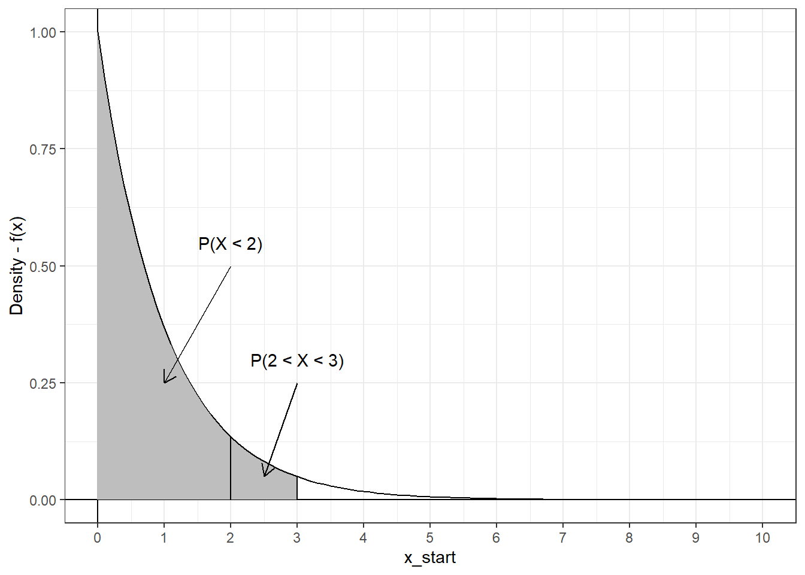
Figure 3.7: P(X < 3)
That is to say, we will need to subtract \(F(2)\) from \(F(3)\) to get the area in the region corresponding to \(P(2 < X < 3)\)
The equation we learned in the last example will be important for our work with cdfs. Let’s dig into a couple more common scenarios.
Example 3.4 Let’s continue using our aforementioned pdf/cdf. Suppose we would like to know the probability that \(P(X > 3)\). One may (yet again!) think we are in a conundrum because of the form of our cdf. Nevertheless, we can again use set notation to make our approach clear.
Note that the support of \(X\) is \(X \geq 0\), and therefore, \(P(X \geq 0) = 1\). That is to say, a random experiment would have a 100% chance of yielding a value greater than or equal to 0 because our pdf has all it’s support on zero and above. Also, observe that
\[ \{X > 0\} = \{0 \leq X \leq 3\} \cup \{X > 3\} \] In English: \(\{0 < X\}\) is the union of two mutually exclusive sets - \(0 \leq X \leq 3\) and \(X < 3\). We can once again use the law of addition to get our desired probability.
\[ \begin{align} \{X > 0\} &= \{0 \leq X \leq 3\} \cup \{X > 3\} \\ P(\{X > 0\}) &= P(\{0 \leq X \leq 3\} \cup \{X > 3\}) \\ 1 &= P(0 \leq X \leq 3) + P(X > 3) \\ 1 - P(0 \leq X \leq 3) &= P(X > 3) \end{align} \] This means that all we need is \(P(0 \leq X \leq 3)\) and we will be able to calculate our desired probability. Looking at the pdf of \(X\), one can see that there is no area below the curve for \(X\) less than zero. In other words, the area under the pdf from 0 to 3 would be equivalent to the area under the curve from three all the way down to \(-\infty\). Put another way, \(P(0 \leq X \leq 3)\) is equal to \(P(X < 3)\), and we know the latter because of our cdf. Specifically
\[ \begin{align} P(X > 3) &= 1 - P(0 \leq X \leq 3) \\ P(X > 3) &= 1 - F(3) \\ P(X > 3) &= 1 - (1 - e^{-3}) \\ P(X > 3) &= 0.04978 \end{align} \] Indeed, note the similarity of this approach to example 2.18 with the countably infinite space of the Poisson random variable. Our approach to this example can be rephrased generally to
\[ P(X > x) = 1 - F(x) \tag{3.3} \]
Although we have derived a couple of equations together, you are hopefully beginning to get a sense for the process of using the cdf. We can, in general, find the area under the curve of a pdf by adding or subtracting appropriate values of the cdf. You can determine what to add and subtract by using set notation or by visualizing the regions under consideration. Let’s hammer this process home with one more example.
Example 3.5 Suppose we are interested in the probability that our random experiment falls below 1 or above three. That is to say, we are interested in the event - \(\{X < 1\}\) OR \(\{X > 3\}\). The two probabilities are depicted in the figure below by the gray area under our exponential pdf.
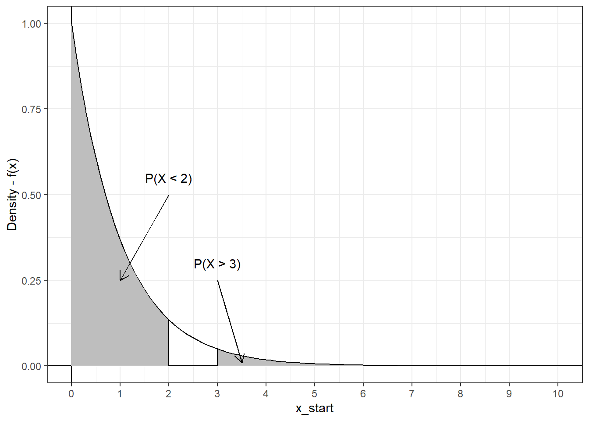
Figure 3.8: P(X < 2) or P(X > 3)
Our intuitive approach suggests that we can simply add the two areas up to get our desired probability. That is,
\[ \begin{align} P(X < 2) + P(X > 3) &= F(2) + (1 - F(3)) \\ &= 1- e^{-2} + (1 - 1 - e(-3)) = 0.81497 \end{align} \] Indeed, the law of addition supports our assertion because \({X < 2}\) and \({X > 3}\) are mutually exclusive. In other words, we can add their corresponding probabilities.
3.2.2 Expectation and Variance of a Continuous Random Variable.
To this point, we have seen many similarities between continuous and discrete random variables - particularly in how they are defined. As you will see, the expectation and variance are no different in this regard. Like the discrete case, the expectation of a continuous random variable can be thought of as the balancing point of the distribution. If we put a wedge under the distribution at the value of its expectation, then it would balance perfectly.
The calculation of a continuous expectation is a bit more complex, and requires integration techniques which are beyond the scope of this book. However, the intuition for the calculation is the similar to the discrete case. We’ll walk through it right now. Consider the probability density function
\[ f(x) = \begin{cases} x & 0 \leq x \leq \sqrt{2} \\ 0 & Everywhere\: else \end{cases} \]
This probability density function is plotted below and it’s not massively different from the first density we talked about. This time we’re looking at a triangle region under the pdf (maybe take a second verify that \(f(x)\) has all the required properties of a pdf).
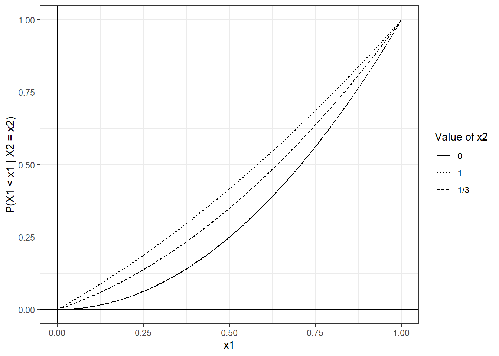
Figure 3.9: Triangle pdf
The cdf of this probability density function is
\[ F(x) = \begin{cases} \frac{x^2}{2} & 0 \leq x \leq \sqrt{2} \\ 0 & Everywhere\: else \end{cases} \] I’ve used integration techniques to get this equation, but you can derive it from the equation for the area of a triangle. Recall, that with regards to the discrete case, the expectation is calculated by multiplying each outcome of \(X\) by its corresponding probability \(p(x)\) and summing the results. That is, if there are \(n\) outcomes in the space of \(X\),
\[ E(X) = \sum_{i = 1}^{n}x_ip(x_i) \] Let’s try something similar for our continuous random variable, first we’ll divide the support of our random variable \(X\) into four equal ranges - each with width \(\frac{1}{4}\sqrt{2}\). Specifically,
\[ \{0 < X < \frac{1}{4}\sqrt{2}\}, \: \{\frac{1}{4}\sqrt{2}\ < X < \frac{2}{4}\sqrt{2}\}, \: \{\frac{2}{4}\sqrt{2}\ < X < \frac{3}{4}\sqrt{2}\}, \: \{\frac{3}{4}\sqrt{2}\ < X < \frac{4}{4}\sqrt{2}\} \] where I haven’t simplified the fractions to highlight the four equal regions. Next, we’ll choose any value from each of the four ranges. Call each \(x_i^*\) - where \(i\) corresponds to range 1 through 4. For the sake of simplicity, let’s select the middle value of each range - \(\frac{1}{8}\sqrt{2} , \: \frac{3}{8}\sqrt{2}, \: \frac{5}{8}\sqrt{2}, \:\) and \(\frac{7}{8}\sqrt{2}\), respectively. The ranges and our \(x_i^*\)s are depicted in the figure below.
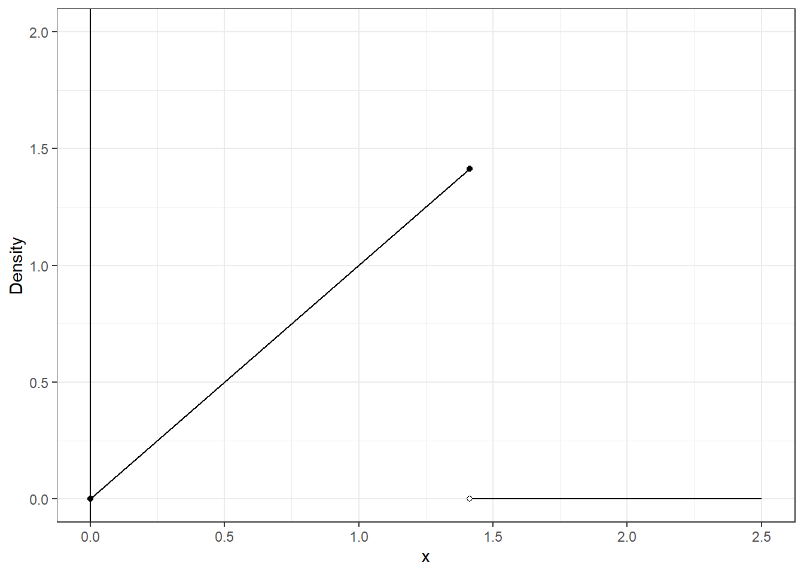
Figure 3.10: Triangle pdf divided into 4
As we have learned, the area under the pdf for a range corresponds to the probability that \(X\) falls in that range. For example, the area under the pdf for the first range is \(P(X < \frac{1}{4}\sqrt{2})\) and for the last range it is \(P(\frac{3}{4}\sqrt{2} < X < \frac{4}{4}\sqrt{2})\). Using (3.2), we can calculate the latter as
\[ \begin{align} P(\frac{3}{4}\sqrt{2} < X < \frac{4}{4}\sqrt{2}) &= P(X < \frac{4}{4}\sqrt{2}) - P(X < \frac{3}{4}\sqrt{2}) \\ &= F(\sqrt{2}) - F(\frac{3}{4}\sqrt{2}) \\ &= \frac{(\sqrt{2})^2}{2} - \frac{(3/4 \cdot \sqrt{2})^2}{2} \\ &= \frac{2}{2} - \frac{9/16 \cdot 2}{2} \\ &= 1 - \frac{9/8}{2} \\ &= 1 - \frac{9}{16} = \frac{7}{16} \end{align} \] Putting it all together, we shall calculate the corresponding probability for each range, multiply each by it’s corresponding \(x_i^*\), and then sum the resulting values. In other words, call each range \(R_i\) for simplicity, and
\[ \sum_{i = 1}^{4} x_1^*P(R_i) \] The equation above looks awfully similar to our equation for the expectation of a discrete random variable. Let’s do the calculation for our four ranges and their corresponding \(x_i^*\)s.
\[ \begin{align} \sum_{i = 1}^{4} x_1^*P(R_i) &= x_1^*P(R_1) + x_2^*P(R_2) + x^*_3P(R_3) + x^*_4P(R_4) \\ &= x_1^*\frac{1}{16} + x_2^*\frac{3}{16} + x_3^*\frac{5}{16} + x_4^*\frac{7}{16} \\ &= (\frac{1}{8}\sqrt{2})\frac{1}{16} + (\frac{3}{8}\sqrt{2})\frac{3}{16} +(\frac{5}{8}\sqrt{2})\frac{5}{16} + (\frac{7}{8}\sqrt{2})\frac{7}{16} \\ &=\sqrt2\frac{21}{32} = 0.92808 \end{align} \] I’ve skipped some of the computational details of the calculation, but I imagine your overwhelming curiosity will lead you to calculate each step yourself. Using integral techniques, the exact expectation of our random variable can be calculated to be \(\frac{2}{3}\sqrt{2}\), so our computation above is a pretty good approximation. What’s neat is that we can make the approximation better by dividing the support of \(X\) into smaller ranges and performing the calculation again with new \(x_i\)s selected from those ranges. In the table below, I’ve done just that. The column on the left indicates the number of ranges (1 to 1000), the second column from the left indicates the width of each of those ranges, and the third column indicates the resulting approximation of \(E(X)\). The final column is the approximation’s difference from the actual value (subtracting the actual from the approximation).
Number of Ranges | Range Width | Approximate E(X) | Difference from Actual |
|---|---|---|---|
1 | 1.41421 | 0.70711 | -0.23570 |
2 | 0.70711 | 0.88388 | -0.05893 |
3 | 0.47140 | 0.91662 | -0.02619 |
4 | 0.35355 | 0.92808 | -0.01473 |
5 | 0.28284 | 0.93338 | -0.00943 |
6 | 0.23570 | 0.93626 | -0.00655 |
7 | 0.20203 | 0.93800 | -0.00481 |
8 | 0.17678 | 0.93913 | -0.00368 |
9 | 0.15713 | 0.93990 | -0.00291 |
10 | 0.14142 | 0.94045 | -0.00236 |
20 | 0.07071 | 0.94222 | -0.00059 |
50 | 0.02828 | 0.94271 | -0.00009 |
100 | 0.01414 | 0.94279 | -0.00002 |
1,000 | 0.00141 | 0.94281 | 0.00000 |
With more ranges - and smaller range widths - the value of our approximation gets closer and closer to the actual value. This observation leads us to an intuitive interpretation of how \(E(X)\) is calculated for a continuous random variable. Suppose we were to make the ranges extremely small (and the number of ranges very high) and perform the computation above. That is, we take the probability that \(X\) falls in each of our very small range, multiply it by a value of \(x\) in that extremely small ranges, and then sum the resulting values. We would end up with the value of \(E(X)\).
Indeed, you’ll note that the procedure we have just walked through is very similar to the calculation for discrete random variables. It may therefore be unsurprising to learn that the expectation of a continuous random variable has the same previously discussed properties as that of a discrete random variable. That is
Theorem 3.1 (Some Properties of the Continuous Expectation) If \(a\) and \(b\) are constants, then
\(E(b) = b\)
\(E(aX) = aE(X)\)
More generally, \(E(aX + b) = aE(X) + E(b)\)
If \(X_1\) and \(X_2\) are random variables, then
- \(E(aX_1 + bX_2)\) = \(aE(X_1) + bE(X_2)\)
Indeed, continuous random variables also share the previously discussed properties of the discrete variance. That is,
Theorem 3.2 (Some Properties of the Continous Variance) If \(a\) and \(b\) are constants, then
\(Var(b) = 0\)
\(Var(aX) = a^2Var(X)\)
More generally, \(Var(aX + b) = a^2Var(X) + Var(b) = a^2Var(X) + 0\)
If \(X_1\) and \(X_2\) are random variables, and they are independent, then
- \(Var(aX_1 + bX_2)\) = \(a^2Var(X_1) + b^2Var(X_2)\)
Because of the equivalence described above, we will heretofore simply refer to the two theorems above as properties of the expectation and variance, respectively, rather than belonging to some class of discrete or continuous random variables. In other words, we may use the properties of the expectation and variance for random variables generally (if those random variables have expectations and variance; we’ll look at an example of a random variable that doesn’t have these in the next section).
Example 3.6 Let’s work with the random variable \(X\) that we defined this section. As stated above, it has \(E(X) = \frac{2}{3}\sqrt{2}\). Suppose we are given a random variable - \(Y \sim B(10,1/2)\) - and we would like to know \(E(X + Y)\). Our properties make this calculation a breeze.
\[ E(X + Y) = E(X) + E(Y) = \frac{2}{3}\sqrt{2} + 10\frac{1}{2} = \frac{2}{3}\sqrt{2} + 5 \]